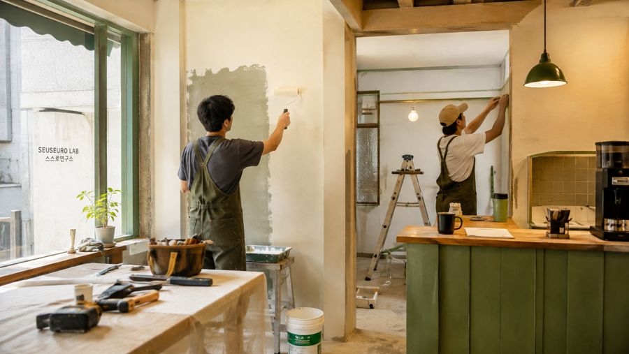
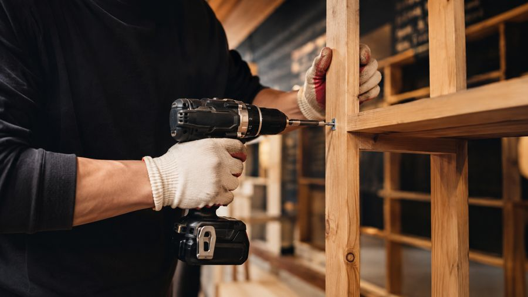
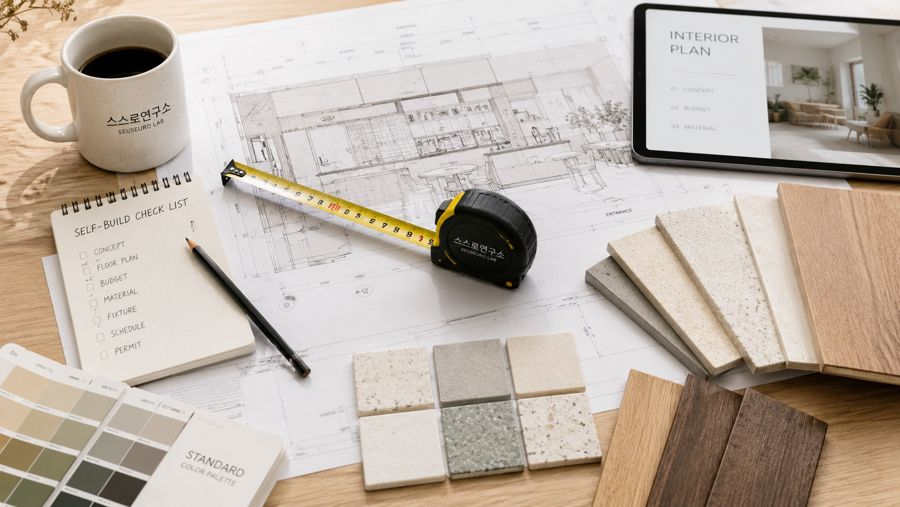
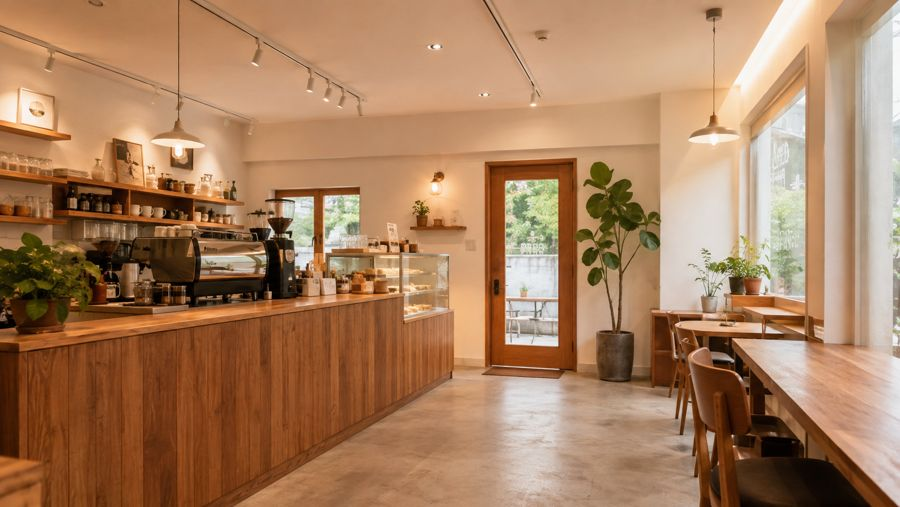

내 가게 공사,전부 맡길 필요도전부 직접 할 필요도 없습니다.
현장과 업종을 진단해 직접 할 공정, 맡길 공정, 꼭 확인할 공정을 나눠 드립니다. 셀프를 권하는 곳이 아니라, 무엇을 스스로 할 수 있는지 연구하는 곳입니다.
회원가입 없이 바로 시작합니다. 결과는 규칙 기반 초안이며, 유료 리포트에서 사람이 다시 검토합니다.
공사는 세 가지 방식으로 나뉩니다
고객이 원하는 건 셀프가 아니라 공사비를 줄이면서 실패 위험을 통제하는 것입니다. 그래서 연구소는 세 방식 중 어느 하나를 밀지 않고, 공정마다 가장 합리적인 쪽을 판정합니다.
직접 시공
자재·구매 목록·가이드만 있으면 되는 공정
반셀프 · 분리 발주
공정별로 기술자를 직접 부르고 일부는 자가 시공
전문 시공
법령·안전·품질 위험이 높아 등록업체가 해야 하는 공정
스스로몰
판정이 끝나면, 필요한 만큼만 삽니다. 직접 할 공정이 정해지면 다음 질문은 "무엇을 몇 개 사야 하나"입니다. 스스로몰은 공정마다 필요한 도구와 자재를 키트로 묶고, 쿠팡·네이버쇼핑·오늘의집·다나와에서 바로 비교해 살 수 있게 연결합니다.
- 공정별 키트 15종 · 도구·자재 160개, 수량 계산법과 시공 순서까지
- 구매 목록에 담아 두고 판매처별로 열거나, 동업자·기술자와 링크로 공유
- 등록업체가 해야 하는 공정(전기 배선·소방·가스)의 자재는 팔지 않습니다
스스로몰의 일부 구매 링크는 쿠팡 파트너스 등 제휴 링크이며, 이를 통해 구매하면 스스로연구소가 판매처로부터 수수료를 받습니다. 구매 가격은 같습니다.
점포의 시점마다 다른 문이 있습니다
네 개 서비스는 다른 고객이 아니라 같은 점포의 다른 시점을 맡습니다. 한 번 진단한 점포의 기록은 리뉴얼·퇴거·재임대까지 이어집니다.

스스로시공소
공정을 나누고, 구매 목록을 만들고, 견적서를 검증하고, 필요한 공정만 검증된 기술자에게 연결합니다.
자세히
스스로원상복구
어디까지 철거해야 하는지를 먼저 판정합니다. 범위가 정해져야 견적이 의미가 있습니다.
자세히
스스로창업
계약하기 전에 그 점포의 전기·배기·소방·공사비 리스크를 봅니다. 공사비의 절반은 계약 전에 정해집니다.
자세히
스스로공간
임대인과 중개사를 위한 서비스. 얼마를 써야 공실이 줄어드는지 예산별로 판단 기준을 드립니다.
자세히진단에서 완료 증빙까지
무료 진단으로 시작해서 필요한 만큼만 다음 단계로 갑니다. 어느 단계에서 멈춰도 됩니다.
7분 진단
업종·면적·상태·예산을 넣으면 공정을 나눠 판정합니다. 무료.
실행 리포트
공정 지도, 구매 목록, 비용 3안, 일정 3안, 행정 체크. 사람이 검토합니다.
현장 진단
실측하고 숨은 위험을 찾아 도면과 구매 목록을 보정합니다.
실행
자재는 직접 사고, 전문 공정만 검증된 기술자에게. 필요하면 공정관리까지.
검수·기록
다섯 개 체크포인트에서 사진으로 확인합니다. 이 기록이 다음 공사의 근거가 됩니다.
어떤 공정을 직접 해도 되는지, 근거와 함께
27개 공정을 법률·안전·숙련·재시공·경제성 다섯 축으로 판정했습니다. 아래는 그중 일부입니다.
| 공정 | 법률 | 안전 | 숙련 | 재시공 | 경제성 | 판정 |
|---|---|---|---|---|---|---|
| 도장(페인트) | L0 | S1 | K2 | R2 | E5 | 직접 가능 |
| 전구·조명기구 교체 | L0~L1 | S2 | K2 | R2 | E4 | 직접 가능 경미공사 범위 확인 |
| 타일(벽·바닥) | L0~L1 | S2 | K4 | R5 | E3 | 전문가 동행 권장 |
| 덕트·환기 | L1~L2 | S3 | K4 | R4 | E2 | 전문가 동행 권장 |
| 전기 배선 신설·분전반 | L2 | S5 | K5 | R5 | E1 | 등록업체 확인 필수 |
| 소방시설 변경 | L2 | S5 | K5 | R5 | E1 | 등록업체 확인 필수 |
판정 다음은 실행입니다. 도구와 자재까지 한 곳에.
315개 셀프시공 항목마다 시공 단계, 필요한 도구와 자재, 참고 가격, 원상복구 난이도, 주의할 법규를 정리했습니다. 구매 링크는 광고가 아니라 비교 화면으로 열립니다.
안 되는 것을 정확히 말하는 곳이 신뢰를 얻습니다
연구소는 셀프를 많이 하게 만드는 곳이 아닙니다. 전기·소방·가스처럼 법령이 등록업자에게 맡긴 공정은 어떤 경우에도 셀프를 권하지 않습니다.
- 법률 판정은 사람이 승인한 규칙표로만 합니다. AI가 임의로 답하지 않습니다.
- "1,500만 원 미만이면 누구나 공사할 수 있다" 같은 문구는 쓰지 않습니다. 분할 발주는 합산됩니다.
- 절감액을 단정하지 않습니다. 금액은 범위로, 표본과 기준일을 밝혀 드립니다.
- 공사가 끝나면 예상 대비 실제 비용 오차, 추가금, 지연, 하자율을 공개할 예정입니다.
내 가게 공사, 어디까지 직접 할 수 있을까요?
업종·면적·현재 상태를 넣으면 공정을 나눠 판정합니다. 7분, 무료.